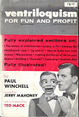

Paul Winchell book
10/16/2012
From Connie Ray (Sweden):
I just read your blog and about the book of Paul Winchell.
In 1958 I bought the book in a bookshop here in Sweden (right). If you note in the upper right corner, the price in USA was $1 which was printed on the cover. This original book has 221 pages.
Some years later I bought the same book on a magic convention (below)
and this book has a green cover, the font size is larger and it has 190 pages.
When I compare the book the green one looks much as a cheaper copy.
* * * * *
From Mr. D:
{kind=link}

I just read your blog and about the book of Paul Winchell.
In 1958 I bought the book in a bookshop here in Sweden (right). If you note in the upper right corner, the price in USA was $1 which was printed on the cover. This original book has 221 pages.
Some years later I bought the same book on a magic convention (below)
and this book has a green cover, the font size is larger and it has 190 pages.
When I compare the book the green one looks much as a cheaper copy.
* * * * *
{kind=link}
From Mr. D:
Thanks for the pictures and your comments. Yes, I've seen both of the books. In fact, we sold the book with green covers for a while. I purchased them direct from Paul, himself, and he signed all the copies. I wish I still had some of them, but I do not.
Like most books I believe the first edition was hardcover, then the reprint was paperback. Pretty standard procedure in the publication world.
I will say, it is still one of my favorite ventriloquist books. My first training as a vent came from that book and I built my first vent figure following the instructions from that book.